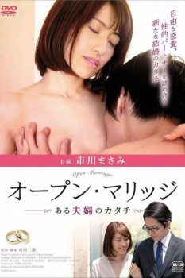

Also known as:オープン・マリッジ ある夫婦のカタチ (original title)
Country:Japan, 77 minutes
Spoken languages:
Genres:Drama
Director(s):Jirō Ishikawa
Writer(s):
Video Codec:Unknown
Number: 2355

Certification:
Storyline:
Ayaka (Masami Ichikawa) is a full-time housewife in her fifth year of marriage. Her husband, Shingo, was busy working at a publishing company and lived a rustic life and a sexless couple life. At one point, Shingo's women's magazine featured "Open Marriage," a new marriage style for married couples. "Open marriage", which was advocated in the 1970s, was that if there was mutual agreement, we could freely have a relationship with other opposite sex. Shingo, who was requested by the editor-in-chief for an experience report, managed to persuade Ayaka ... After that, the two who found each other's sexual partners, with the excitement born from jealousy, disappeared from sexlessness and began to demand each other's bodies violently.
Cast:
Masami Ichikawa (as Ayaka), Gaichi, Sousuke Yamamoto, Ren Fukusaki, Manzo Shinra
Medium: Media file,
Location: D:\Martial Arts Training\Forms of the American Style Nunchaku\Open Kata.mp4
Loaned: No
Aspect ratio: Unknown